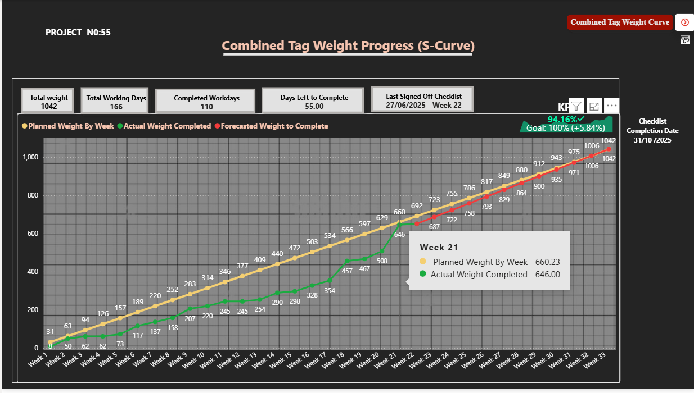
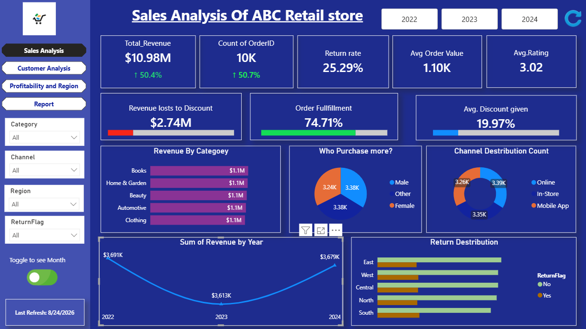
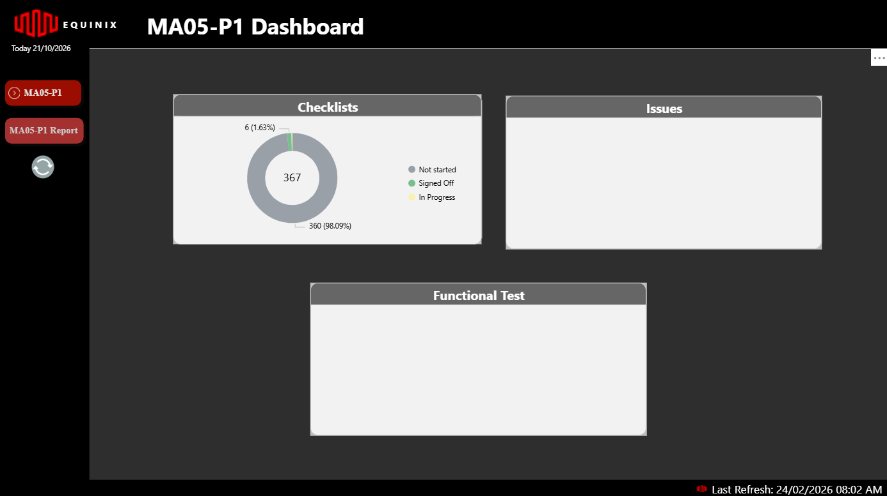
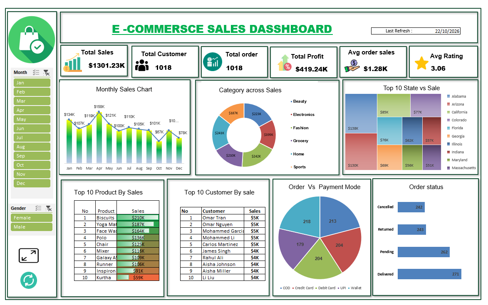

Results-driven Data Analyst & BI Specialist with hands on UAE experience in translating complex datasets into strategic business intelligence. Expert in Power BI, Microsoft Fabric, Python,SQL,Excel, and SharePoint integration — building end-to-end analytics pipelines, predictive ML models, and NLP classifiers that drive operational efficiency.LLM / RAG / Agentic AI Enthusiast pushing the frontier of intelligent automation.
I'm Najma Shanija, a Data Analyst and BI Specialist who builds the full data stack — from raw API ingestion into Microsoft Fabric Lakehouse, through automated ETL pipelines, to production Power BI dashboards served live to stakeholders via SharePoint.
At ABL Technical I designed and deployed 15+ Power BI dashboards using Microsoft Fabric Semantic Models and OneLake, integrated with SharePoint Lists, cutting manual reporting time by 40%. I built ML models for predictive maintenance and issue classification, and engineered NLP pipelines using BERT for automated equipment issue categorisation.
Beyond analytics, I'm deeply interested in Generative AI, LLMs, RAG pipelines, and Agentic AI — actively exploring how intelligent agents can transform data workflows and business decision-making.
Based in Al Warqa, Dubai on a Spouse Visa. Immediately available.

📈
🛒
🏗️
📈Open to full-time roles in Data Analytics, BI Development, ML Engineering, or Generative AI across Dubai and the UAE. Also available for freelance and contract projects. Spouse Visa — no sponsorship delay. Usually respond within 24 hours.